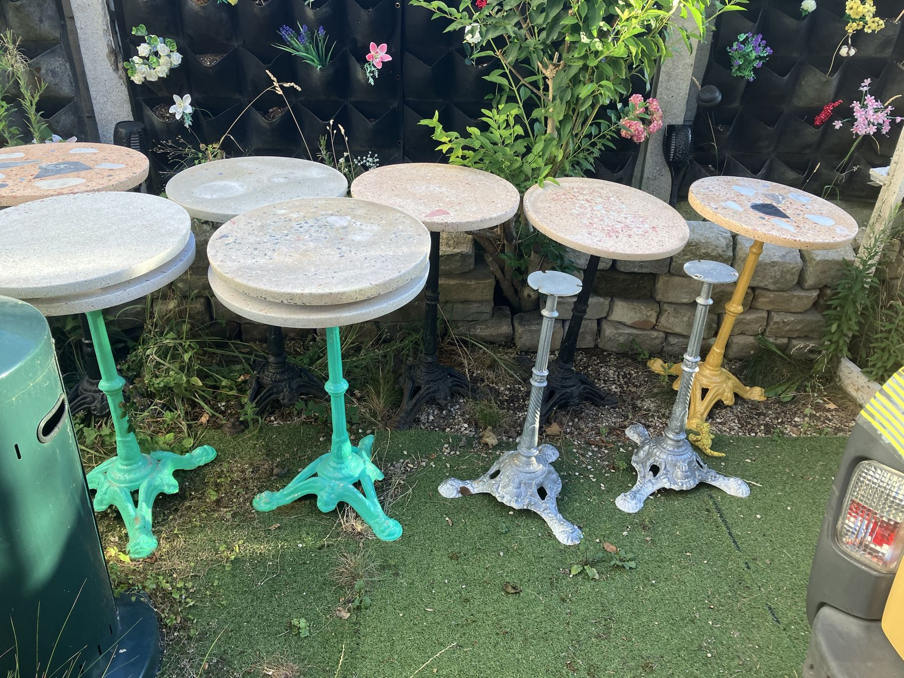
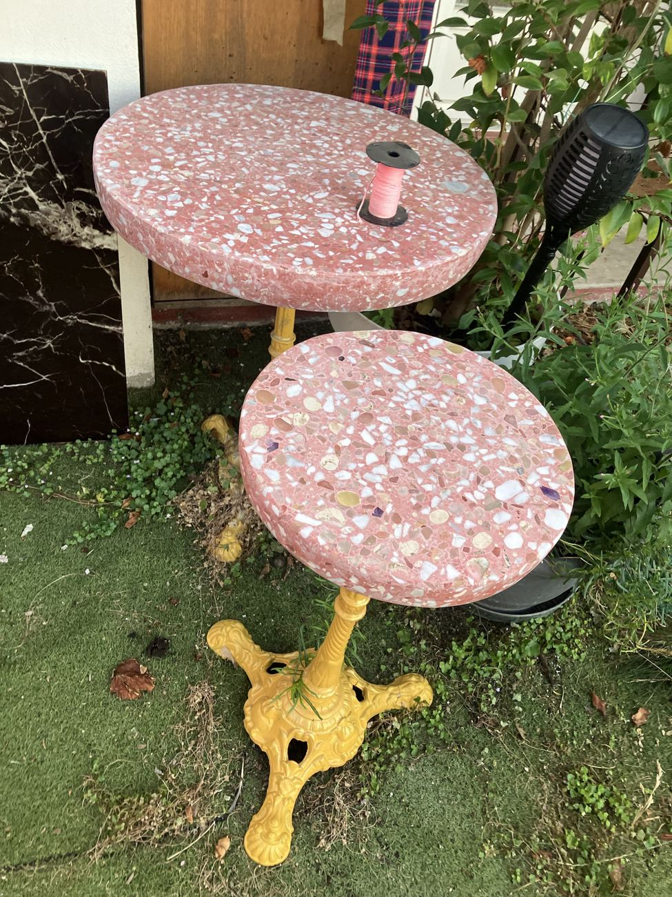
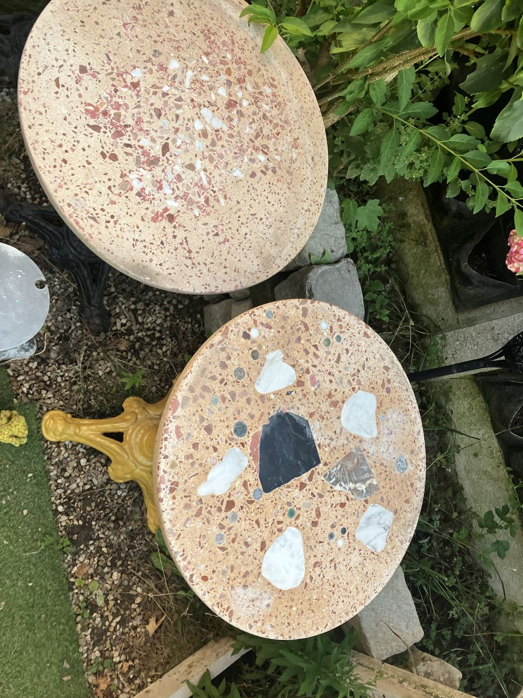
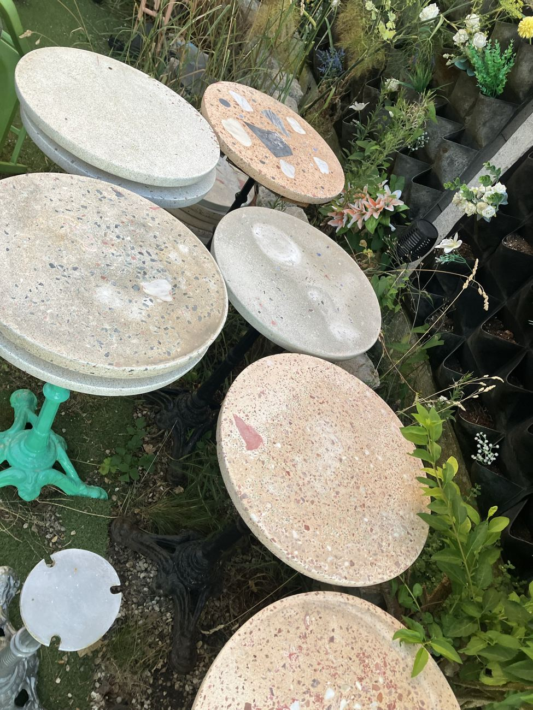
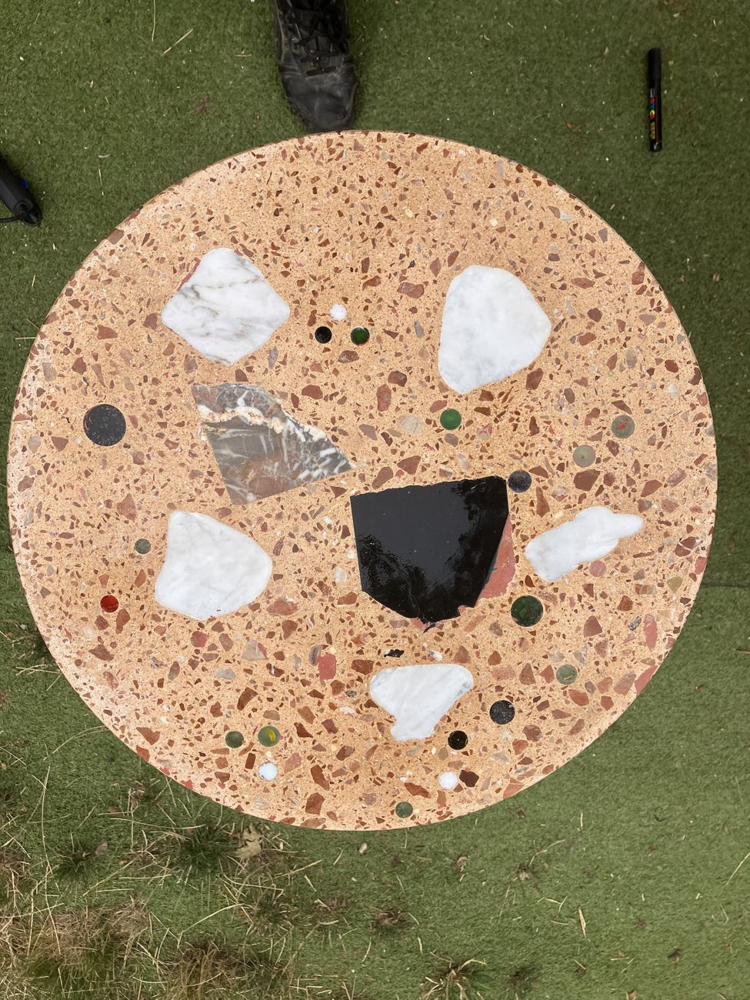

Art fonctionnel · Atelier de terrazzo · Île-de-France
Des œuvres en terrazzo, coulées main. Un seul exemplaire de chaque table.
Chaque table est une sculpture qui sert : un plateau en éclats de marbre sur un pied de bistrot en fonte repeint, avec son nom, ma signature et sa date gravés au dos.

Série 0 · L'Univers
Six œuvres, six tables en terrazzo
Aucune n'a de jumelle. Les éclats de marbre tombent où ils tombent, le pied a sa couleur, le nom est gravé à la main. Ouvrez une table pour voir toutes ses photos et ses détails.
 1/1 · Disponible
1/1 · DisponibleSoleil
Pied jaunePlateau ocre orangé, gros éclats de marbre blanc, noir et gris veiné.
Voir la pièce 1/1 · Disponible
1/1 · DisponibleMars
Pied noirPlateau sable parsemé de rouge, nuage d'éclats blancs au centre.
Voir la pièce 1/1 · Disponible
1/1 · DisponibleLune
Pied argentéPlateau gris pâle, éclats bleu nuit, taches blanches comme des cratères.
Voir la pièce 1/1 · Disponible
1/1 · DisponibleTerre
Pied vert vifPlateau clair moucheté de rouge et de vert, sur pied vert vif.
Voir la pièce 1/1 · Disponible
1/1 · DisponibleEarth
Pied vert vifSœur de Terre : même pied vert, un autre dessin d'éclats.
Voir la pièce 1/1 · Disponible
1/1 · Disponibleテーブル
Pied argenté« Table » en japonais. Plateau blanc, éclats rouges rares, pied argenté.
Voir la pièceArt fonctionnel
Une œuvre qu'on utilise tous les jours
Mes tables se posent comme un meuble et se regardent comme une sculpture. Chaque plateau est une mosaïque de marbre, coulée une seule fois.
Un seul exemplaire
Aucune œuvre n'est reproduite. Le nom, ma signature et la date sont gravés au dos : c'est son identité.
Série 0 : L'Univers
Les six premières œuvres, nommées Soleil, Lune, Terre, Mars… portent la date du 14 juillet 2025. Elles marquent le début de ce travail.
Fait main, en Île-de-France
Coulée, finie et gravée à l'atelier, à la main, par l'artisan qui la signe.
Acquérir l'une des premières pièces, c'est choisir une œuvre dont on connaît l'auteur, la date et l'histoire. Je ne promets aucune plus-value : une œuvre s'achète d'abord pour la vivre chez soi.
Chaque œuvre est remise avec sa facture, qui fait office de certificat d'authenticité.

Gravé à la main, signé, daté
Le dessous raconte la pièce. Son nom est creusé dans le terrazzo et rempli de couleur dorée, avec ma signature et la date. Le pied est vissé sur une cale en bois de parquet.
- NOMTerre, Earth, Lune, Soleil, Mars… chaque table a le sien
- SIGNATURELe paraphe de l'atelier, gravé à côté du nom
- 14/07/2025La date de la Série 0
Sur mesure
Une œuvre en terrazzo sur mesure
Vous avez une couleur, un lieu, une histoire à mettre dans un plateau ? Je crée l'œuvre avec vous, et elle reste unique elle aussi.
Comment ça se passe
- 1
Vous décrivez
L'usage, la place, les couleurs que vous aimez. Une photo de la pièce suffit.
- 2
Je propose
Plateau, éclats et pied, avec un prix avant de commencer.
- 3
Je coule
L'œuvre est fabriquée à l'atelier, à la main, en un seul exemplaire.
- 4
Je grave et je remets
Nom, signature et date au dos. Elle est à vous.




D'autres plateaux de l'atelier. Les couleurs et les éclats se choisissent.
Questions
Ce qu'on me demande souvent
Quelles sont les dimensions des tables ?
Chaque table mesure 71 cm de haut. Le plateau rond en terrazzo fait 49,5 cm de diamètre et 3,5 cm d'épaisseur.
Chaque table est-elle vraiment unique ?
Oui. Les plateaux sont coulés à la main, avec des éclats de marbre placés pour chaque pièce. Aucun plateau n'est reproduit. Le nom, la signature et la date sont gravés au dos.
Peut-on commander une table en terrazzo sur mesure ?
Oui. La couleur du plateau, les éclats de marbre, le pied, la gravure et la taille se choisissent avec vous. Appelez ou envoyez un SMS pour décrire votre projet.
Est-ce un investissement ?
Chaque table est une œuvre signée, datée et en un seul exemplaire, ce qui la distingue d'un meuble de série. Je ne promets aucune plus-value : une œuvre s'achète d'abord pour la vivre chez soi.
Y a-t-il un certificat d'authenticité ?
Oui. Chaque œuvre est remise avec sa facture, qui fait office de certificat d'authenticité.
Qu'est-ce que la Série 0 ?
C'est la première série de tables, nommée L'Univers : les six premières œuvres, gravées et datées du 14 juillet 2025, qui marquent le début de ce travail.
Où est l'atelier ?
En Île-de-France. Pas de visite sur place : on se joint par téléphone ou SMS, à toute heure, et le retrait ou la livraison se discutent à la commande.
Quel est le prix d'une table ?
Le prix est communiqué sur demande, par téléphone ou SMS, car chaque pièce est unique.
Contact
Acquérir une œuvre ou parler d'un projet
Appelez-moi ou écrivez quelques lignes. Je réponds avec disponibilité, prix et possibilités de retrait ou de livraison.
- Atelier
- Île-de-France
- Téléphone
- 07 83 92 58 94